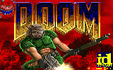

Mi página del Web
Esta es mi página del Web. No es muy extensa, pero tiene todos los
elementos básicos. Espero que os guste. Poco a poco le iré
añadiendo más cosas interesantes.
 Mis aficiones
Mis aficiones
Mis páginas
favoritas
| Un lugar ideal para mis vacaciones |
|---|
|
Una de mis aficiones favoritas son los juegos tipo "Doom", con los que paso horas incontables.
"The truth is out there"